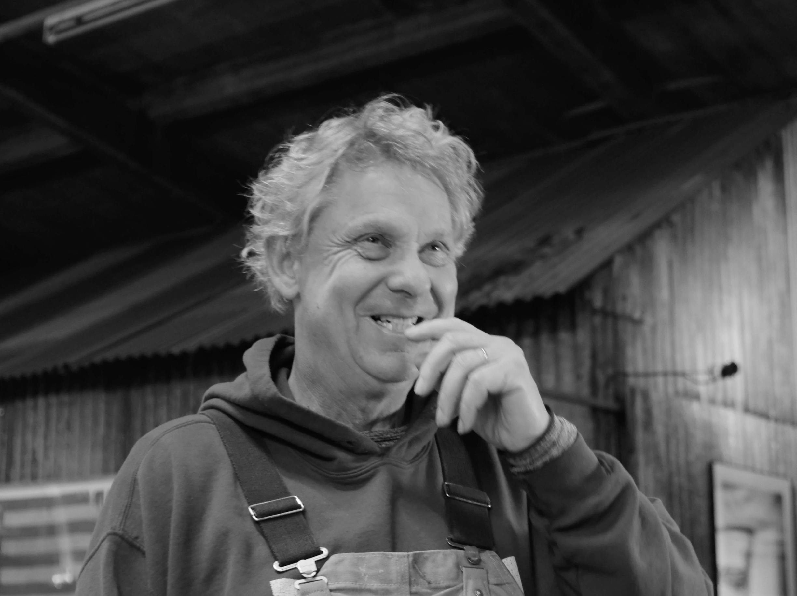
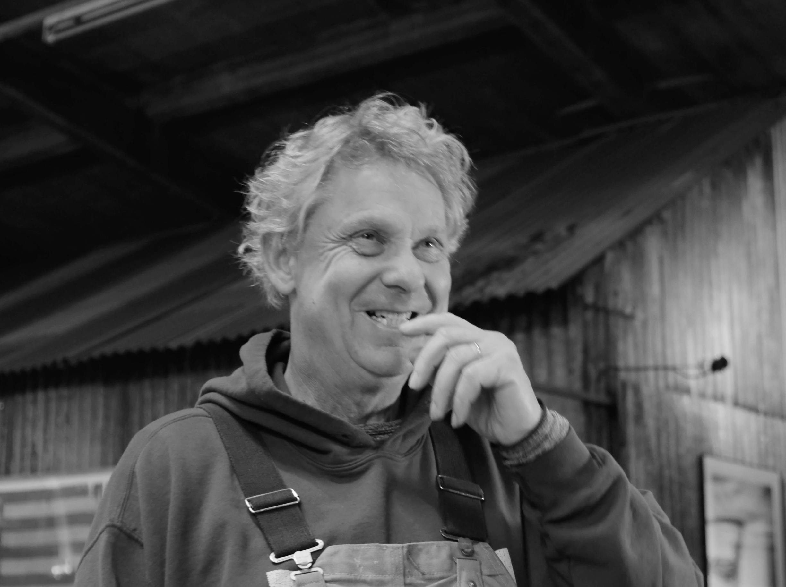

Director: Barbare Saikodze
Cinematographer: Barbare Saikodze and Bente de Vries
Producer: Lani de Boer
Audio Design: Lynn Schijven
Editor: Vanesa Vrablova
Interviewer: Vanesa Vrablova
Talent: Diederick Kraaijeveld
Music
Artist: Kings of convenience
Track Name: Misread
In this (soon to be) short documentary we take you into the life and the studio of Diederick Kraaijeveld, a Dutch artist whose
hyper-realistic mosaics tell stories of transformation, resilience, and beauty found in the overlooked. This film dives deep into Diederick's artistic process. It delves into his unique choice of medium and the philosophy that drives him. It's an exploration of how a man who once told other people stories through journalism, now uses art to tell
his own.
Now a sculptor, Diederick creates hyper-realistic mosaics using reclaimed wood, preserving the natural textures and colours of the materials he collects from discarded sites around the world.
This film is a testament to transformation - both of materials and of the person's life path.
 >
>


 
